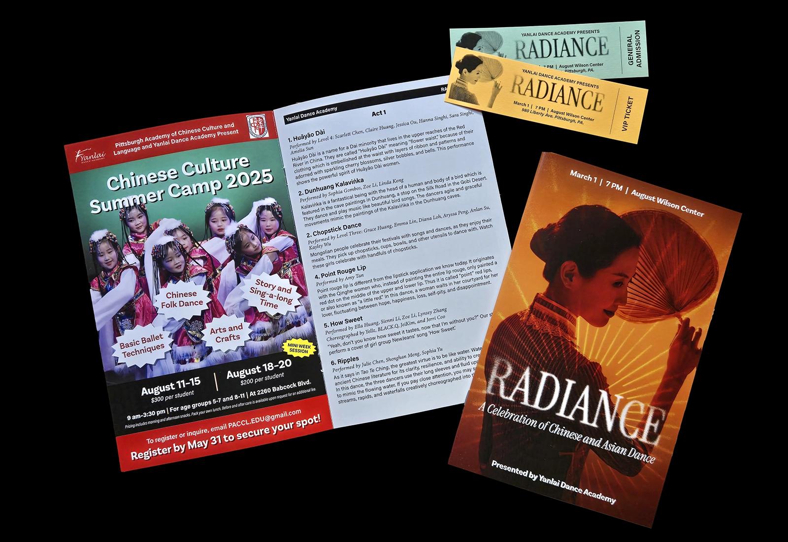
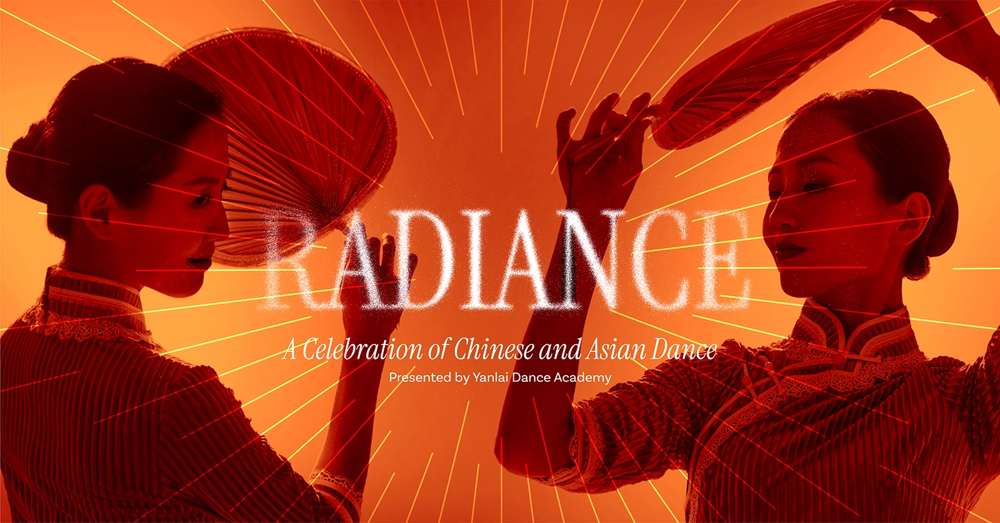
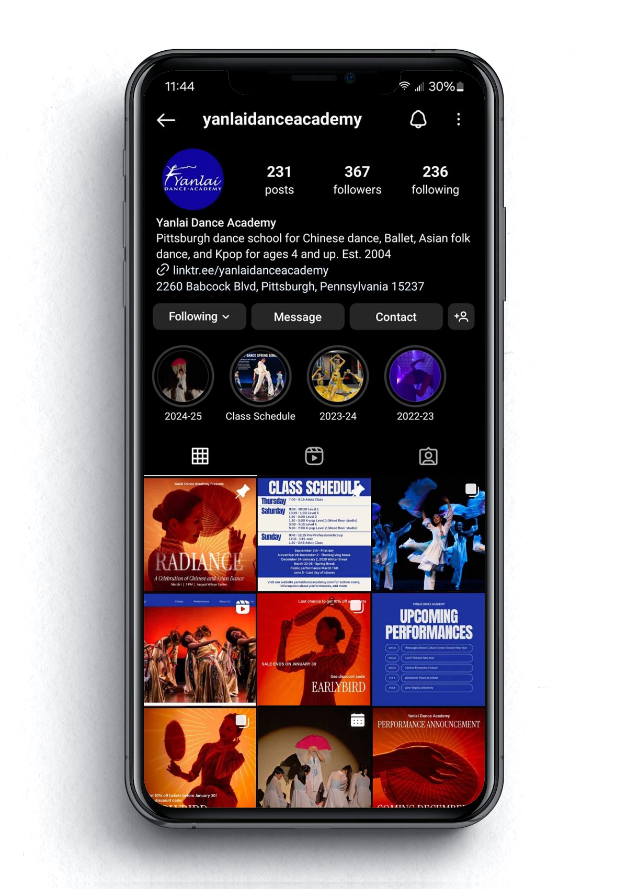
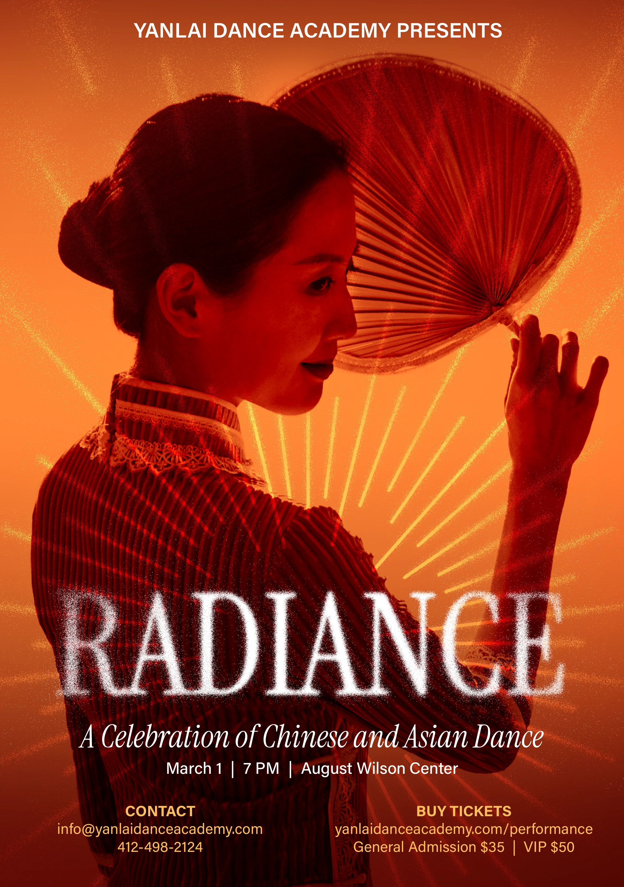
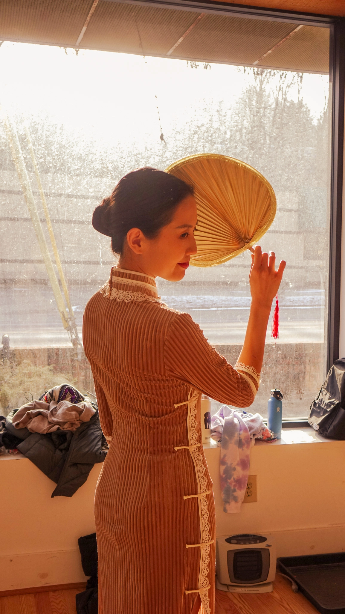
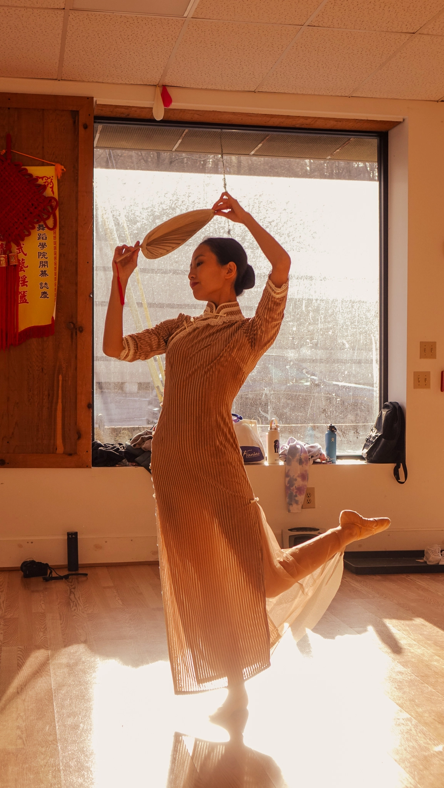

Yanlai Dance Academy, founded in 2004 is Pittsburgh's leading dance studio in the art of Chinese dance. The academy offers classes to students, age 4 to adults, in folk and classical Chinese dance, ballet, K-pop and more. I work part-time as a dance teacher at the studio in addition to being hired for graphic design work for the studio.
I was hired to create imagery and design for the 2025 recital Radiance. For this concept, I was involved in all parts of the process from art directions, photography, and asset creation. We took photos of one of the main dancers and used dramatic light and editing to cut out her silhouette. These images were used across promotion in line with the title of the show and radiating lines. The lines and edges of the title disperse and disolve like light particles floating away.
Project Info
2025 / Art direction, photography, graphic design
I was hired to create imagery and design for the 2025 recital Radiance. For this concept, I was involved in all parts of the process from art directions, photography, and asset creation. We took photos of one of the main dancers and used dramatic light and editing to cut out her silhouette. These images were used across promotion in line with the title of the show and radiating lines. The lines and edges of the title disperse and disolve like light particles floating away.
Project Info
2025 / Art direction, photography, graphic design



I took photos of one of the dancers Christine Meng at the studio. Using natural backlighting, I took dramatic photos that highlight the dancer's "radiance". I took these photos into Photoshop, removed the background, and added a gradient map to remove excess color for the program concept.


I took photos of one of the dancers Christine Meng at the studio. Using natural backlighting, I took dramatic photos that highlight the dancer's "radiance". I took these photos into Photoshop, removed the background, and added a gradient map to remove excess color for the program concept.

